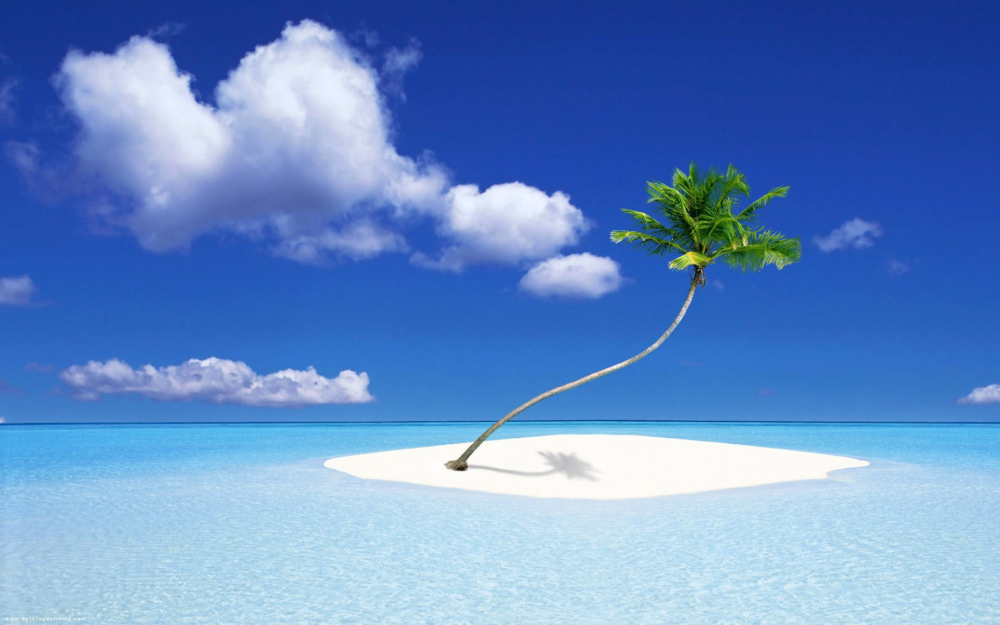

About Me

There are three types of nature I love. I love the ocean, mountain tops, and rainfall. The ocean is a great place to be. It is very peacefully and relaxing to listen to the waves crash against the shore. The mountain top is another peaceful place to be. It is especially enjoyable when there is a river flowing by and birds are humming. Listening to rain drops on the roof top is especially relaxing when I am not occupied with the hustle and bustle of life. I need to schedule more time to smell the roses.